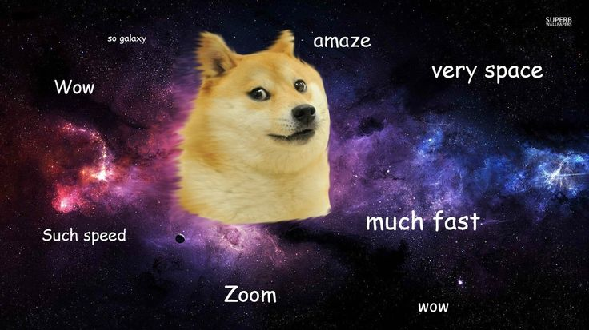

<!DOCTYPE html><html><head><meta charset="utf-8"><meta name="viewport" content="width=device-width, initial-scale=1, maximum-scale=1"><title>TKPPL | Cara Kerja Botnet</title><link rel="stylesheet" type="text/css" href="bower_components/prism/themes/prism.css"><link rel="stylesheet" type="text/css" href="bower_components/todc-bootstrap-main/dist/css/bootstrap.min.css"><link rel="stylesheet" type="text/css" href="styles/main-presentation.css"></head><body></body></html><nav role="navigation" class="navbar navbar-default"><div class="container"><div class="navbar-header"><button type="button" data-toggle="collapse" data-target="presentation-chooser" class="navbar-toggle"><span class="sr-only"></span><span class="icon-bar"></span><span class="icon-bar"></span><span class="icon-bar"></span></button><a href="index.html" class="navbar-brand">BotNet</a></div><div id="presentation-chooser" class="collapse navbar-collapse"><ul class="nav navbar-nav"><li class="dropdown"><a data-toggle="dropdown" href="#" class="dropdown-toggle">Pilih Presentasi <b class="caret"></b></a><ul class="dropdown-menu"><li><a href="1-Introduction.html">Pengenalan Botnet</a></li><li><a href="2-CaraKerjaBotnet.html">Cara Kerja Botnet</a></li><li><a href="3-PresentasiDenganBespokeJS.html">Presentasi dengan Bespoke.JS</a></li><li><a href="4-SCRUM.html">SCRUM</a></li><li><a href="5-UserStories.html">User Stories</a></li><li><a href="6-Trello.html">Trello dan Bug Reporting</a></li><li><a href="7-PengenalanKontrolVersi.html">Kontrol Versi</a></li><li><a href="8-DasarKontrolVersi.html">Dasar Kontrol Versi</a></li><li><a href="9-Commit.html">Commit</a></li><li><a href="10-LogDanHistory.html">Log dan History</a></li><li><a href="6-TugasBeSpoke.html">Tugas Be Spoke</a></li><li><a href="11-TimeMachine.html">Time Machine</a></li><li><a href="12-PushDanPull.html">Push dan Pull</a></li><li><a href="13-Branching.html">Branching (Percabangan)</a></li><li><a href="14-GitFlow.html">GitFlow Workflow</a></li></ul></li></ul></div></div></nav><article id="presentation"><section><h2>Ini section Santun</h2><h3>wololo</h3><h4>Test test wololo such wow wow</h4></section><section><h2>Wow</h2></section></article><script src="bower_components/bespoke.js/dist/bespoke.min.js"></script><script src="bower_components/bespoke-bullets/dist/bespoke-bullets.min.js"></script><script src="bower_components/bespoke-scale/dist/bespoke-scale.min.js"></script><script src="bower_components/bespoke-hash/dist/bespoke-hash.min.js"></script><script src="bower_components/bespoke-progress/dist/bespoke-progress.min.js"></script><script src="bower_components/bespoke-state/dist/bespoke-state.min.js"></script><script src="bower_components/prism/prism.js"></script><script src="bower_components/prism/components/prism-bash.min.js"></script><script src="scripts/main.js"></script><script src="bower_components/jquery/jquery.min.js"></script><script src="bower_components/todc-bootstrap-main/dist/js/bootstrap.min.js"></script>